# Data Scientists vs Developers? https://djcordhose.github.io/ml-workshop/2020-d2d-ds-vs-dev.html
Titel: Data Scientists vs Developers? Art des Vortrags: Vortrag (45 Minuten) Niveau: Grundlagen Stichwörter | Key words: Firmenkultur, Zusammenarbeit, Projektmanagement Abstract: Es gibt eine erstaunliche Spannung im Bereich der Zusammenarbeit zwischen Data Scientists und Software-Entwicklern. Sie ist teilweise als misstrauisch, teilweise als neidisch, teilweise als verachtend zu charakterisieren. In diesem Talk reden Mikio und Oliver Klartext und sprechen davon was für Schwierigkeiten und Ängste sich bei der Zusammenarbeit von Data Scientists und Software Developern ergeben. Wo unterscheidet sich die Arbeitsweise und die Prozesse? Wo die Werkzeuge? Welchen sozialen Herausforderungen muss man begegnen? Vorkenntnisse | Previous knowledge: Selbst mal an einem Data Science Projekt beteiligt gewesen zu sein hilft sicher. Lernziele | learning objectives: Wir hoffen, dieser Talk hilft ein bisschen gegenseitiges Verständnis bei Data Scientists, Entwicklern und deren Managern zu schaffen, um in Zukunft mit mehr Spaß und Erfolg komplexe Data Science Projekte angehen zu können.
Ziel - Leuten aus der Seele sprechen - Probleme aufzeigen Warum schreiben wir Code? Was sind Randbedingungen dafür? Mindsets - DS: Hypothesen aufstellen und valideren - Dev: Qualität der Software (es gut machen)
### Form * Alles in 15-20 Grafiken möglich? * Englsich? * Tag-Team? (kann auch gewechselt werden)
### Intro Hand heben * Wer ist DS? * Wer Dev?
Devs wissen nicht was sie tun und Data Scientists kommen nicht zu Potte * Code von Data Scientist ist wirrer Wahnsinn * Welche Dev glaubt das? (seid ehrlich) * Devs sind Prinzipien-Reiter * Welche DS glaubt das? (seid ehrlich) * Alles dauert ewig * Welche DS glaubt das? (seid ehrlich)
### Struktur - Vorurteile - Ansätze - Process and Mindset - Agile and Roles - Synthese
# Vorurteile
### Abspecken angesagt? Dicke Torwärte halten weniger Bälle 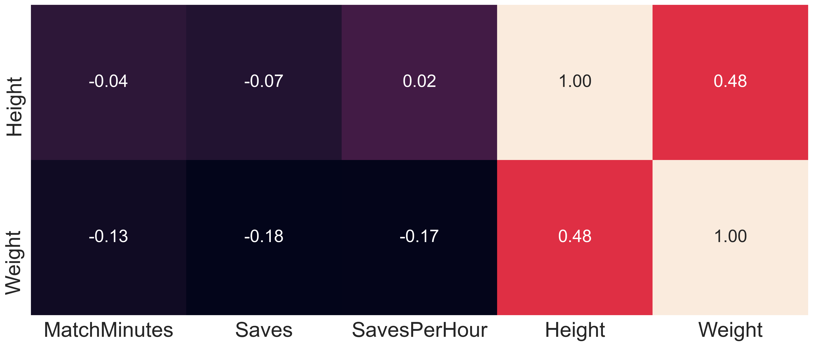
### Üble Nachrede * Keine Daten * Gehacke * Schwache Aussagen
## Versus
### Developers _Machine Learning Projekt? Dann setze ich schonmal den Kubernetes Cluster auf!_
<img src='img/logo/docker.png' height="200"> <img src='img/logo/jenkins.png' height="200"> <img src='img/logo/kubernetes.png' height="200"> https://github.com/kubernetes/kubernetes/tree/master/logo https://www.docker.com/company/newsroom/media-resources https://wiki.jenkins.io/display/JENKINS/Logo;
# Ansätze
### Maschinelles Lernen vs. Software-Entwicklung _ML_ * POC & Forschung * Experimentieren * Hohes Risiko, hohe Belohnung _Software-Entwicklung_ * Langlebige Produkte * Instandhaltung * Zuverlässigkeit
### Machine Learning vs Software Development _ML_ * POC & Research * Experimentation * High Risk, High Reward _Software Development_ * Long Living Products * Maintenance * Reliability
### Machine Learning in Projects * Data Science and Machine Learning can be experiments that fail often * Success of experiment can be precondition to starting a software project * ML experiment work rather feels like PO work * Some ML work rather is engineering, though * Can be part of an agile team
<img src='img/classic-development.jpg'>
<img src='img/supervised-ml.jpg' height="650px">
### Was macht DS aus 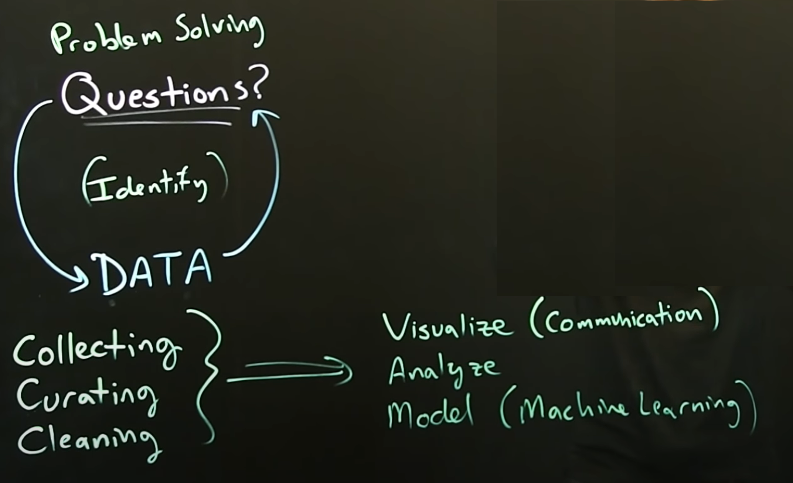 QUelle: https://youtu.be/FsSrzmRawUg Ganze Playlist dazu: https://www.youtube.com/playlist?list=PLMrJAkhIeNNQV7wi9r7Kut8liLFMWQOXn
# Process, Roles, and Mindset
### Wieso müssen Devs und DSs überhaupt zusammen arbeiten? 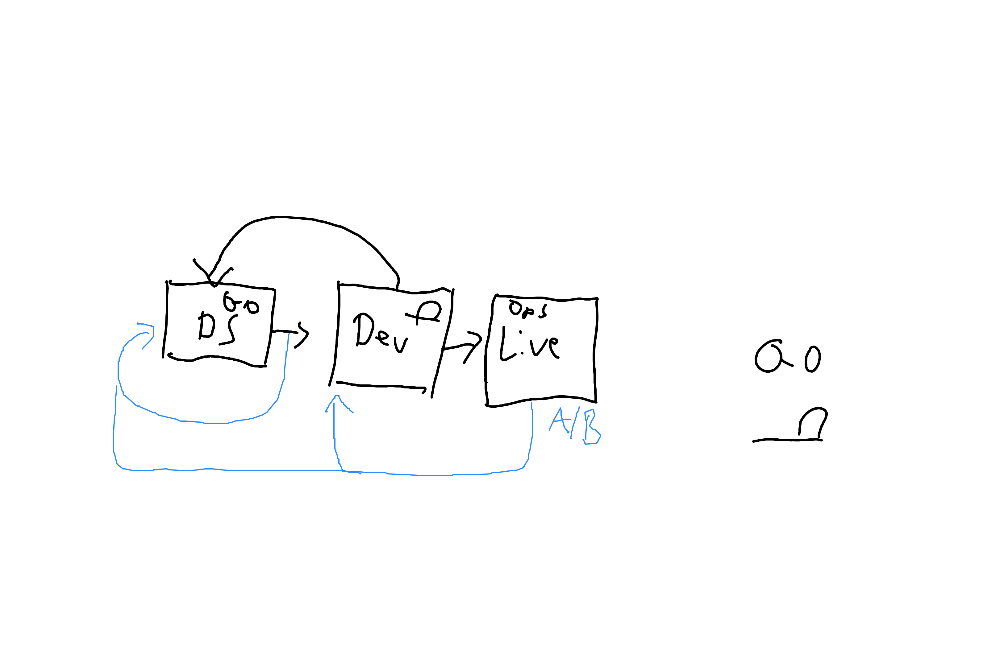
### Und wo tauchen da die Probleme auf? 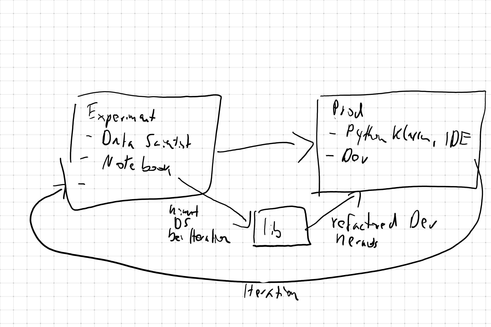
### DS vs Dev * Was ist eine Version? * Kopie eines Notebooks * Artefakt in github * Wie geht Code-Reuse * Copy-Paste * Lib * Was ist guter Code? * anpassbar an viele Beispiele, macht tolle Sachen * Wartbar, Korrekt
### Von Exploration zur Production 1. DS Notebooks aufräumen 1. Quatsch raus 1. Thematisch aufteilen in mehrere Notebooks falls sinnvoll 1. Auskommentierung als if-then soll raus 1. Minimale Version Wenn DS und Dev dasselbe Programmiersprache/Framework teilen 1. DS und Dev zusammen 1. Was ist nicht spezifisch für das Notebook? Auslagern 1. Diese neuen Notebooks sind nun die Basis für die nächste Iteration 1. Wenn man die lib anders braucht, nicht direkt daran ändern, entkoppeln durch Copy-Paste
### Wie gehen Software-Projekte im allgemeinen? 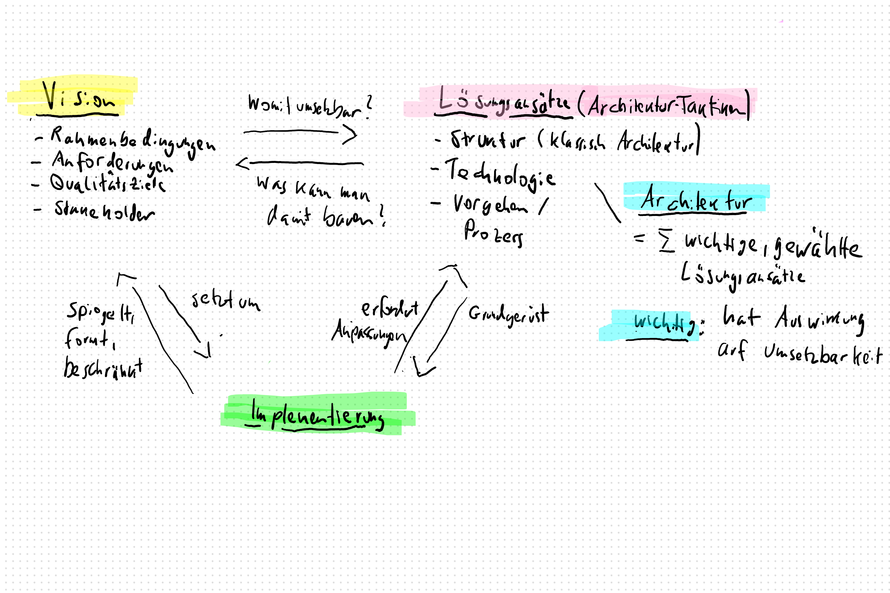
### Architektur-Arbeit bei ML-Projekten * häufig bekommt bei Software-Architektur der Implementierungsteil unterschätzt * bei ML ist es der der Vision * häufig kann eine Vision nicht oder nur angepasst umgesetzt werden * dies ist Teil der Architektur-Arbeit
### Anatomie von ML-Projekten 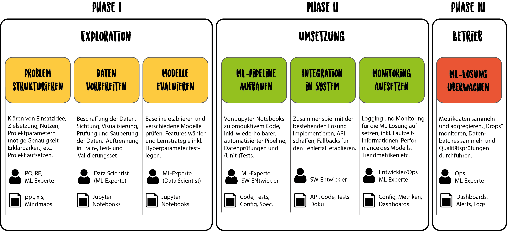
# Agile and Roles
### Machine Learning in Projects * Data Science and Machine Learning can be experiments that fail often * Success of experiment can be precondition to starting a software project * ML experiment work rather feels like PO work * Some ML work rather is engineering, though * Can be part of an agile team
### Agile Machine Learning Projects? _ML projects have uncertainty over both timeframe and outcomes_ approaches 1. control - “distributional” approach to project management - assign priors and utilities to various outcomes 1. agile - work in very short time-boxed iterations 1 day to 1 week - at the end of iteration present results - be honest and open about them - decide if it makes sense to enter next time box <small> <br> https://twitter.com/dennybritz/status/1090139019973775360 <br> https://twitter.com/l2k/status/1089988137424629760 </small>
### What does this mean for you? If you want to adopt Machine Learning in your Company * Success can not guaranteed * Rather experiment within time boxes * Expect and clearly communicate failures * Bring models into production as quickly as possible * Do not optimize for the last few percentages * Quality of the data matters more than your approach
# Synthese
### Es gibt nicht DEN Entwickler und DEN Data Scientist * Entwickler * Framework/Infrastruktur * Dev-Op * Anwendungsentwickler * Data Scientist * ML * Statistiker * Data Viz
## Traditional Development and Machine Learning melt into one
### Role Model: Tesla https://www.youtube.com/playlist?list=PLRM2gQVaW_wVM4FBALoM7Wydb6n9NOiJ0 https://youtu.be/hx7BXih7zx8
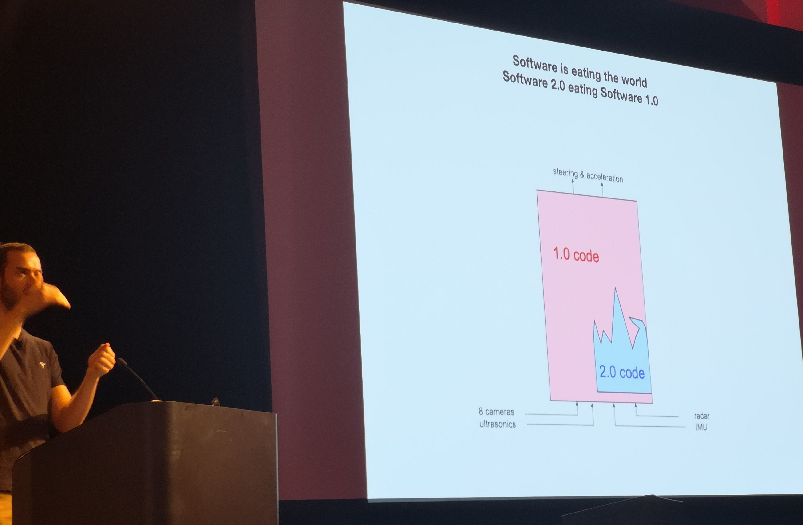
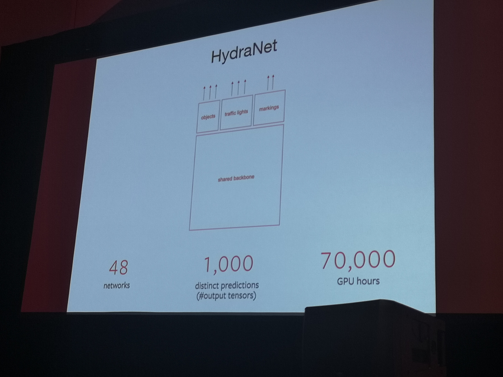
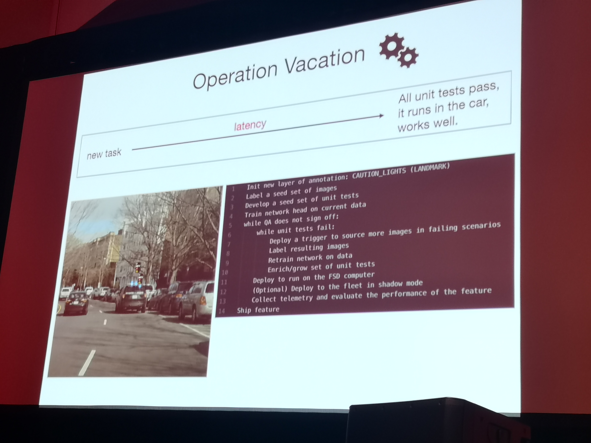
## What DS can learn from dev
### ML needs to solve challenges for production 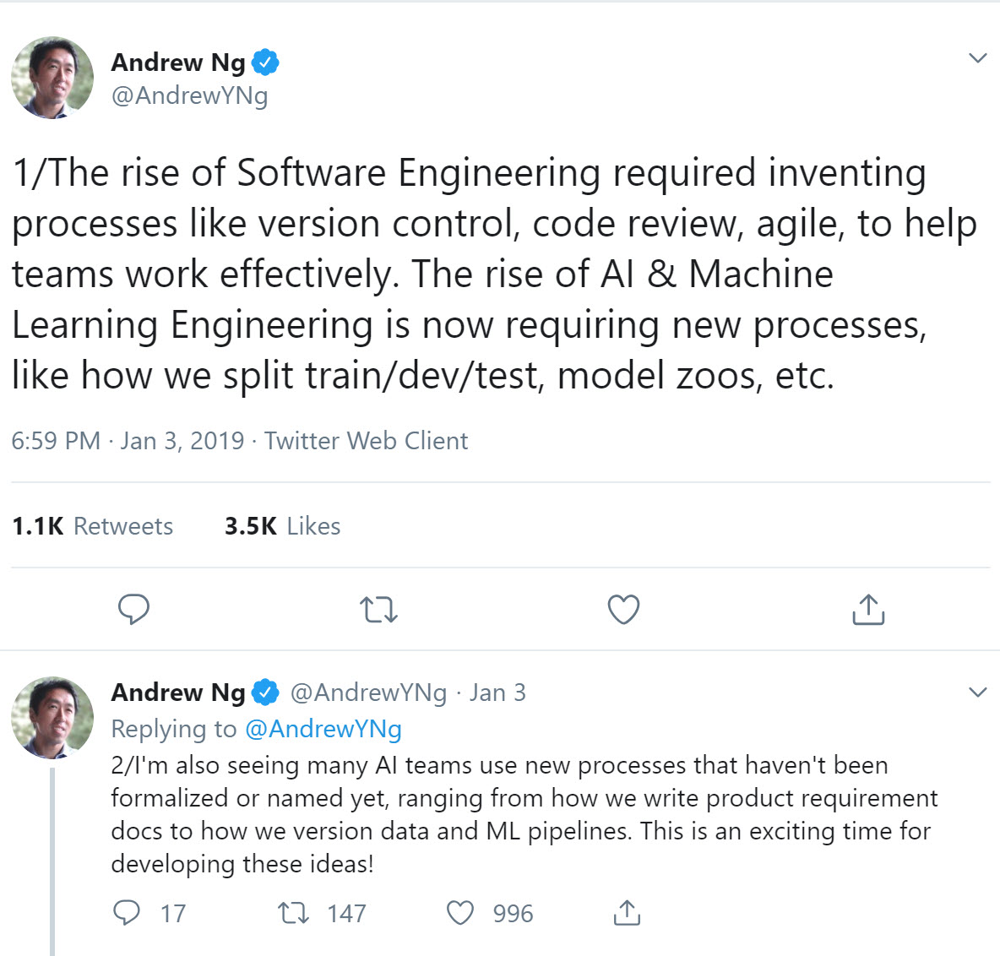 <small> https://twitter.com/AndrewYNg/status/1080886439380869122 </small>
### What’s your ML Test Score? A rubric for ML production systems <small> https://static.googleusercontent.com/media/research.google.com/en//pubs/archive/45742.pdf </small> Präsentiert auf der NIPS 2016 https://nips.cc/Conferences/2016/Schedule?showEvent=6255
# Mikios vielleicht passende Sachen https://www.slideshare.net/mikiobraun/bringing-ml-to-production-what-is-missing-amld-2020
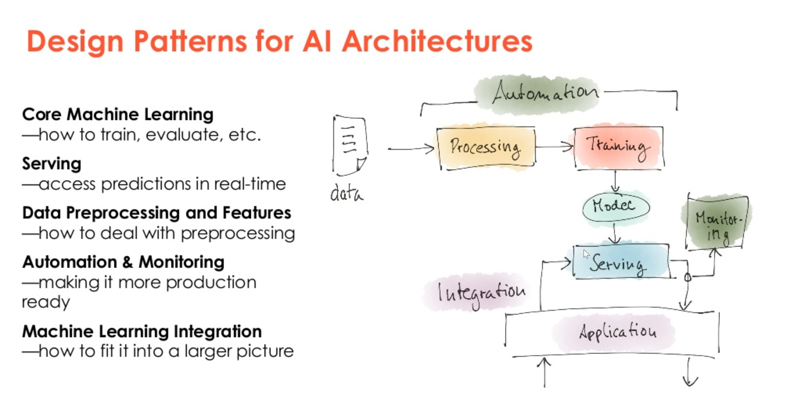 <small> https://www.slideshare.net/mikiobraun/bringing-ml-to-production-what-is-missing-amld-2020 </small>
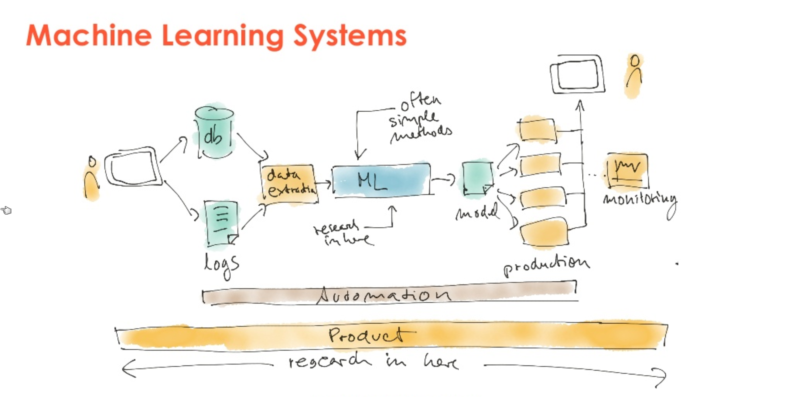 <small> https://www.slideshare.net/mikiobraun/bringing-ml-to-production-what-is-missing-amld-2020 </small>
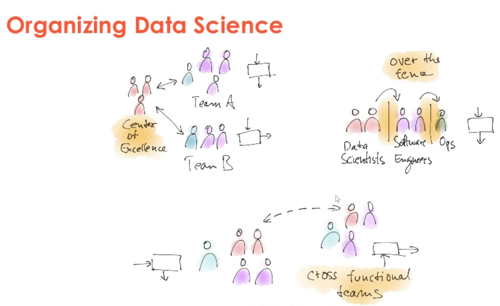 <small> https://www.slideshare.net/mikiobraun/bringing-ml-to-production-what-is-missing-amld-2020 </small>
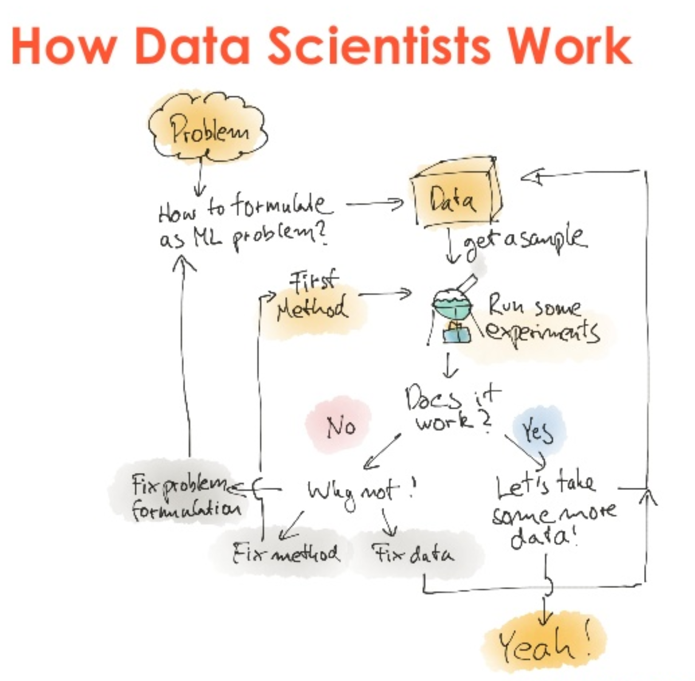 <small> https://www.slideshare.net/mikiobraun/bringing-ml-to-production-what-is-missing-amld-2020 </small>
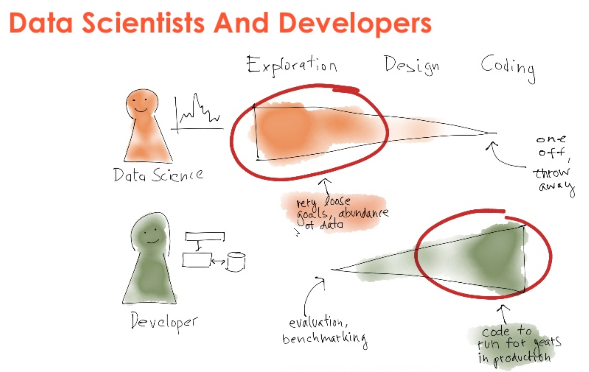 <small> https://www.slideshare.net/mikiobraun/bringing-ml-to-production-what-is-missing-amld-2020 </small>
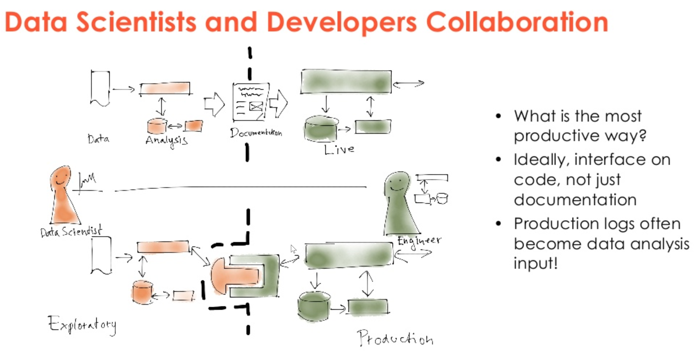 <small> https://www.slideshare.net/mikiobraun/bringing-ml-to-production-what-is-missing-amld-2020 </small>